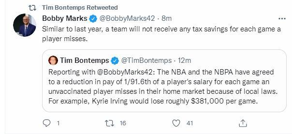
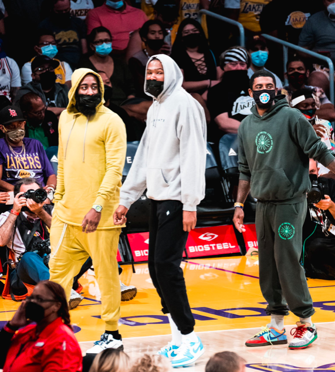

北京时间10月4日，NBA记者Tim Bontemps报道，NBA与NBPA已经同意，由于当地安全健康协议的相关规定，未接种疫苗的球员每缺席一场比赛，将被减薪1/91.6。例如：凯里-欧文每场比赛大约会损失38.1万美元。

除此之外，ESPN的薪资结构专家鲍比-马科斯跟踪报道，与去年的情况类似，一个球队不会因为球员错过每一场比赛减薪而获得任何的奢侈税减免。
（换言之不管这位球员最终缺席多少场比赛+多少钱都与奢侈税无关，球队缴纳奢侈税还是按照总的薪金支出来计算）
在10月4日早些时候，史蒂夫-纳什接受采访时谈到了关于欧文接种疫苗的情况，他表示：“欧文接种疫苗的情况没有任何的更新，我都不知道他能否参与球队在纽约的训练。”（很明显欧文目前还没有接种疫苗）

湖人与篮网的季前赛欧文是在场边参与了的，不过欧文并没有出战。欧文新赛季的薪水为3491万美元，假如他缺席41场主场那么他将少1562万美元的薪水。更加恐怖的是，欧文在洛杉矶的一个地下停车场吃快餐被拍到了，他没有佩戴口罩与不明身份的球迷距离很近，这个也涉嫌违反了联盟的健康与安全协议。